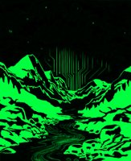
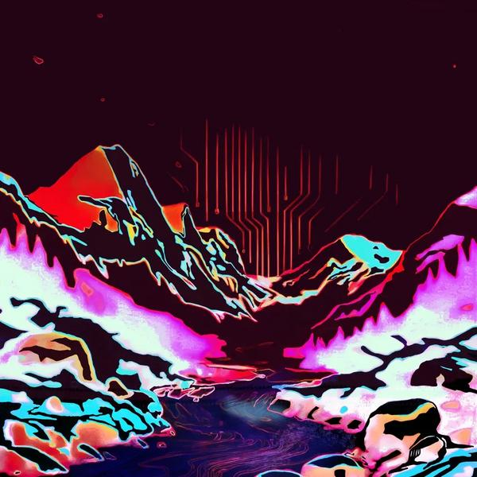
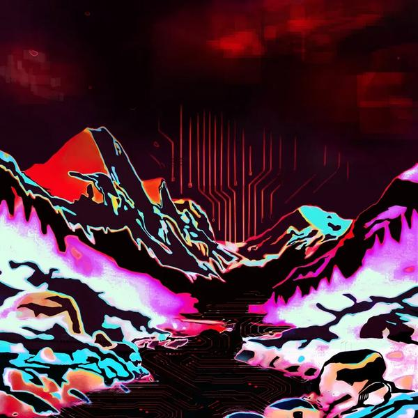
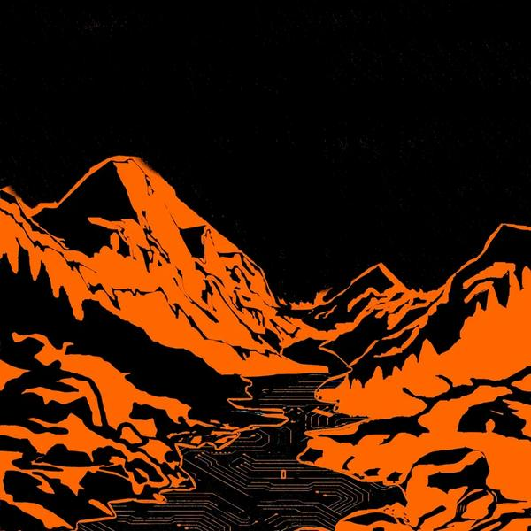
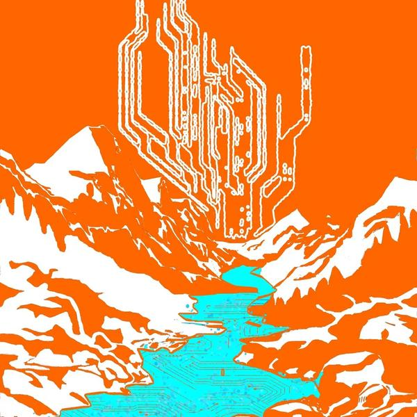
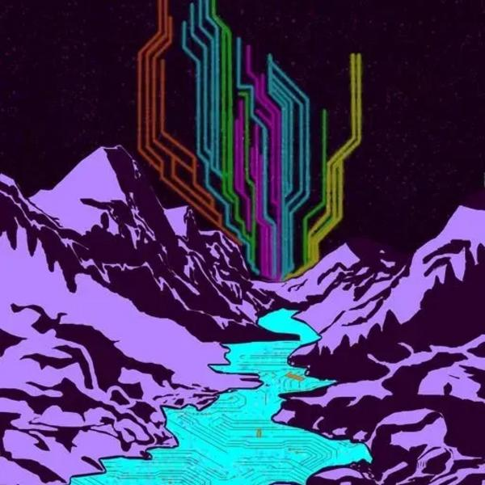
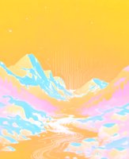
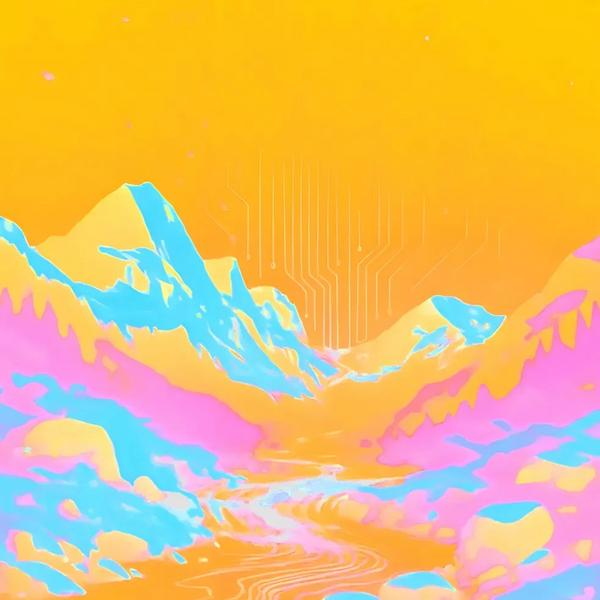
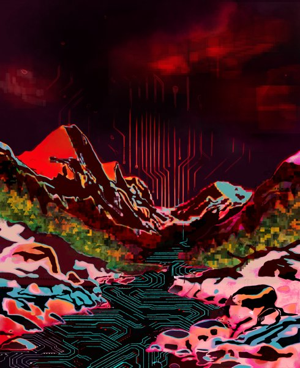
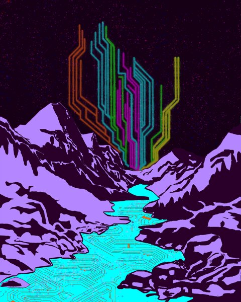

// SANGRE DE CRISTOS · COLORADO · TEN FREQUENCIES
Sangre de Cristos
10 PIECES IN THIS SERIES
The same Colorado mountain range rendered ten times, each a different color palette, each a different emotional state. It begins with Sangre De Cristos: Night, pure neon green on absolute black, the piece that proved the concept. Neon, Colorado, Blanca, Blanca at Dusk, Midnight V2, Midnight/Dawn, Circuits, Dreamsicle, and Dusk follow: amber noon, crimson edge-of-night, orange-on-black reduction, lavender dawn with a multicolor transmission tower. A circuit board rises from the valley in every version, growing from faint suggestion to towering antenna across the series. The mountains were always transmitting. This is the range seen through a blacklight at every hour of the day, one place, ten truths.

Sangre De Cristos - Night

Sangre De Cristos: Blanca

Sangre De Cristos: Blanca at Dusk

Sangre De Cristos: Circuits

Sangre De Cristos: Dreamsicle

Sangre De Cristos: Midnight/Dawn

Sangre De Cristos: Neon

Sangre De Cristos: Colorado

Sangre De Cristo Dusk

Sangre De Cristo Midnight V2
SERIES ARCHIVE // AUTO-GENERATED FROM THE FOUNDRY REGISTRY // 2026-09-23